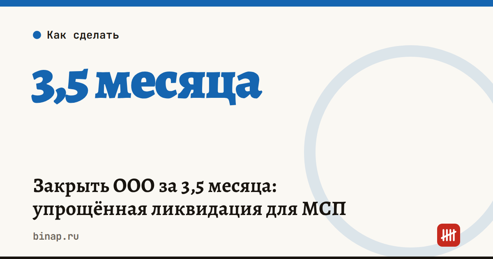

Закрыть ООО за 3,5 месяца: упрощённая ликвидация для МСП

Компания из реестра МСП может закрыться по одному заявлению и выйти из ЕГРЮЛ за 3,5 месяца вместо обычного года — если у неё нет долгов по налогам, недвижимости, транспорта и она не платит НДС.
Коротко
- Срок: 3,5 месяца после заявления против примерно года при обычной процедуре.
- Заявление одно: форма № Р19001. Подписывает каждый участник — усиленной электронной подписью (в том числе через «Госключ») или подписью, заверенной у нотариуса.
- Кредиторы могут возразить в течение трёх месяцев после публикации объявления. Объявление публикует налоговая.
- Если возражений нет, компанию исключают без запрета на три года участвовать в новых компаниях и руководить ими.
Сроки, изменения и разборы для ИП и самозанятых — каждое утро в Telegram и MAX. Подпишитесь, чтобы не пропустить.
Подходит ли ваша компания
Условия должны выполняться и при подаче заявления, и в момент исключения:
- компания включена в реестр МСП;
- компания не плательщик НДС — в 2026 году упрощенцы с доходом выше 20 млн ₽ платят НДС, подробнее в статье порог НДС для УСН;
- нет долгов по налогам, сборам и другим обязательным платежам;
- нет недвижимости и транспорта в собственности;
- нет незавершённых расчётов с кредиторами (это условие есть на странице ФНС);
- в ЕГРЮЛ нет записей о недостоверных сведениях;
- компания не в ликвидации, реорганизации и не исключается по решению налоговой.
Как проходит процедура
По данным ФНС:
- Вы подаёте заявление Р19001.
- Налоговая рассматривает его в течение пяти рабочих дней и вносит в ЕГРЮЛ запись о начале процедуры.
- Налоговая публикует объявление.
- Три месяца кредиторы могут направить возражения.
- Если возражений нет — компанию исключают из ЕГРЮЛ.
Чем это лучше, чем ждать исключения «как недействующей»
Если компания просто перестала работать и сдавать отчёты, налоговая со временем исключит её сама. Но тогда руководителю и участникам на три года запрещают участвовать в новых компаниях и руководить ими. При упрощённой процедуре такого запрета нет — это важно, если вы собираетесь открыть новое дело. Как быстро оформить новую компанию — в статье типовой устав ООО.
Что сделать сейчас
- Пройдитесь по списку условий: чаще всего мешают НДС, имущество на балансе и долги.
- Проверьте долги в личном кабинете налогоплательщика и закройте их.
- Закажите выписку из ЕГРЮЛ и посмотрите, нет ли записей о недостоверности.
- Подготовьте подписи всех участников и подайте форму Р19001 через сервис «Государственная онлайн-регистрация бизнеса».
- Пока идёт процедура, продолжайте сдавать отчётность: до исключения компания существует и отвечает за сроки.
Частые вопросы
Можно ли так закрыть ИП? Нет, эта процедура — для юрлиц. ИП закрывается по своему порядку.
Что если кредитор возразит? По данным ФНС, возражения принимают в течение трёх месяцев со дня публикации, а исключение происходит, только если их нет. Что будет дальше при возражении, на странице ФНС не описано — тогда стоит перейти к обычной ликвидации.
Нужно ли платить пошлину? На странице ФНС сумма не указана — уточните в инспекции перед подачей.